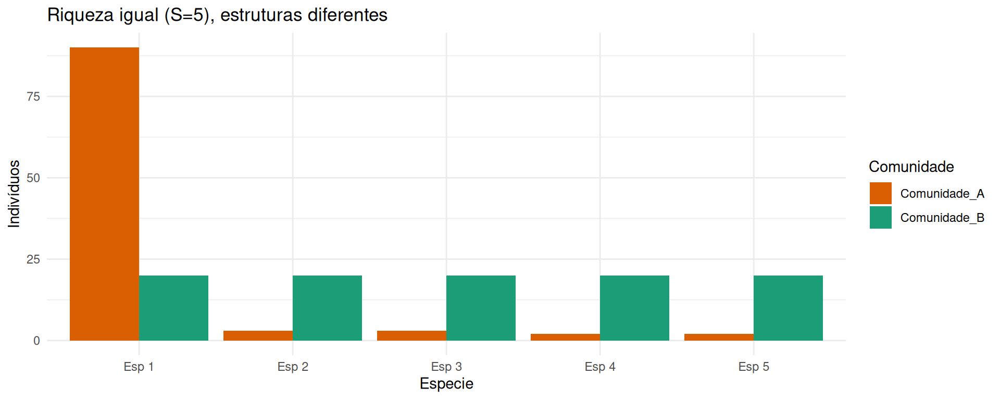
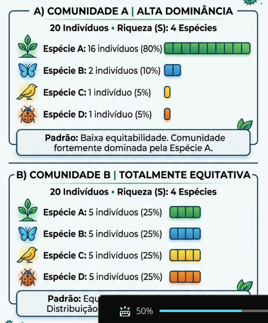
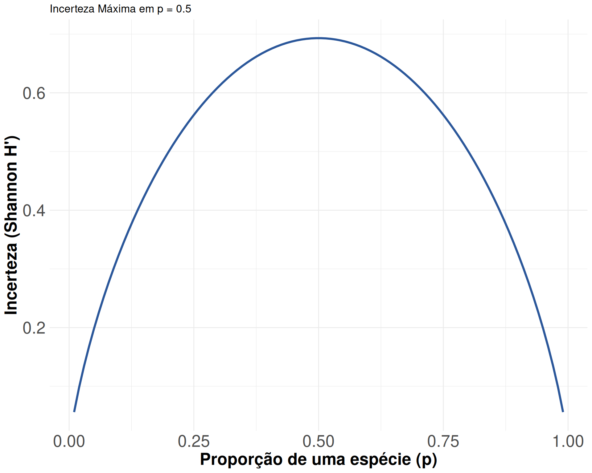
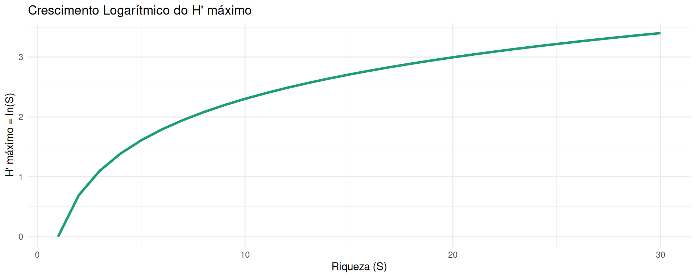
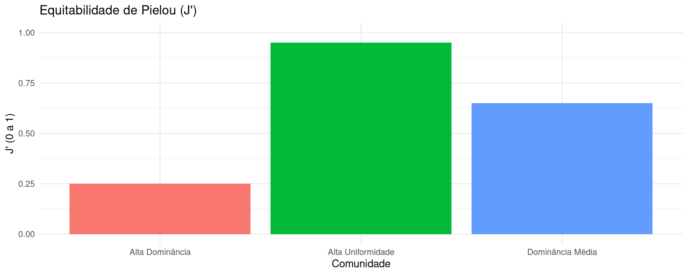
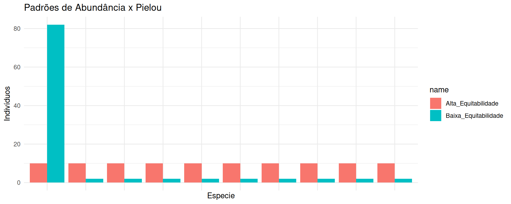

Medidas clássicas de diversidade em ecologia
Módulo 2: Índices de Diversidade Clássicos
A dimensão dupla da biodiversidade local
- A diversidade biológica local não se resume à contagem de espécies.
- Riqueza (\(S\)): número total de espécies presentes.
- Equitabilidade (\(J'\)): grau de uniformidade da abundância entre espécies.
- Duas comunidades com a mesma riqueza podem ter estruturas opostas.
O conceito de diversidade alfa
- Escala local delimitada.
- Reflete os processos de nicho, amostragem e interações locais.
- Serve de base para os cálculos de diversidade beta e gama.
- Necessita de índices sintéticos.

Por que a riqueza isolada é insuficiente?
- A riqueza \(S\) ignora abundâncias.
- É altamente sensível ao tamanho da amostra.
- Omitir a abundância oculta processos de dominância ecológica.

Origem do índice de Shannon-Wiener
- Mede a incerteza contida em uma sequência de símbolos.
- Adaptado para ecologia por MacArthur e Wilson nos anos 1950.
- Avalia a incerteza em prever a espécie de um indivíduo sorteado.

A equação de Shannon-Wiener
- \(p_i\): proporção da espécie \(i\) na comunidade.
- Usa logaritmo natural (\(\ln\))
- O sinal negativo ajusta o resultado para valores positivos.
- Equação formal: \[H' = - \sum_{i=1}^{S} p_i \ln(p_i)\]
Interpretação prática de Shannon

O índice de Simpson e a probabilidade de encontro
- Formulado por Edward Simpson em 1949.
- Mede a probabilidade de dois indivíduos sorteados ao acaso pertencerem à mesma espécie.
- Fórmula básica de dominância: \[D = \sum_{i=1}^{S} p_i^2\]
- \(D\) varia de \(1/S\) até 1 (onde 1 é dominância absoluta).
As formas derivadas de Simpson
- Diversidade (\(1 - D\)): \[1 - D = 1 - \sum p_i^2\] Probabilidade de dois indivíduos serem de espécies diferentes.
- Inverso de Simpson (\(1 / D\)): \[\text{Inverso} = \frac{1}{\sum p_i^2}\] Número de espécies muito abundantes.
Comparação visual: Shannon vs Simpson
Sensibilidade a espécies raras vs dominantes
- A escolha do índice define o foco da análise ecológica.
- Se o objetivo for detectar espécies raras, prefira Shannon ou riqueza.
- Se o objetivo for avaliar espécies dominantes e estrutura de biomassa, prefira Simpson.
Conceito de diversidade máxima
- Para qualquer riqueza \(S\), existe um valor máximo teórico de diversidade.
- Ocorre quando todas as \(S\) espécies têm exatamente a mesma abundância (\(p_i = 1/S\)).
- Fórmula do Shannon máximo: \[H'_{\text{máx}} = \ln(S)\]
- Serve de referência para o cálculo de equitabilidade.

A equitabilidade de Pielou
- Proposta por E. C. Pielou em 1966.
- Razão entre a diversidade observada e a diversidade máxima possível: \[J' = \frac{H'}{H'_{\text{máx}}} = \frac{H'}{\ln(S)}\]
- Varia estritamente de 0 (dominância total) a 1 (uniformidade perfeita).

Interpretação de Pielou na prática
- Permite isolar o efeito da uniformidade do efeito da riqueza.
- Ajuda a comparar áreas com contagens de espécies diferentes.
- \(J' > 0.8\): comunidade com distribuição de abundâncias muito homogênea.
- \(J' < 0.5\): presença marcante de uma ou poucas espécies hiperdominantes.

Limitações dos índices clássicos
- Unidades não intuitivas (nats, probabilidade).
- Falta de proporcionalidade linear (ex.: \(H'=2.0\) não é o dobro de \(H'=1.0\)).
- Dependência do tamanho da amostra e do esforço de amostragem.
- Dificuldade de comunicação.
Por que entropia não é diversidade?
- Shannon (\(H'\)) mede entropia e incerteza.
- Dobrar o número de espécies não dobra o valor de \(H'\).
- É necessário converter para números efetivos.
- Lou Jost (2006) formalizou a transição para Números de Hill.

Transição conceitual para números efetivos
- A conversão transforma índices clássicos em unidades de espécies.
- Exponencial de Shannon: \(q1 = \exp(H')\).
- Inverso de Simpson: \(q2 = 1 / D\).
- Permite comparações percentuais intuitivas e interpretação direta.

Síntese e conclusões do módulo
- A diversidade alfa integra riqueza de espécies e equitabilidade.
- Shannon (\(H'\)) mede incerteza e dá peso intermediário a espécies raras.
- Simpson (\(1-D\)) mede probabilidade de encontro e foca em dominantes.
- Pielou (\(J'\)) isola a uniformidade da riqueza.
- Na próxima etapa: unificação com os Números de Hill!